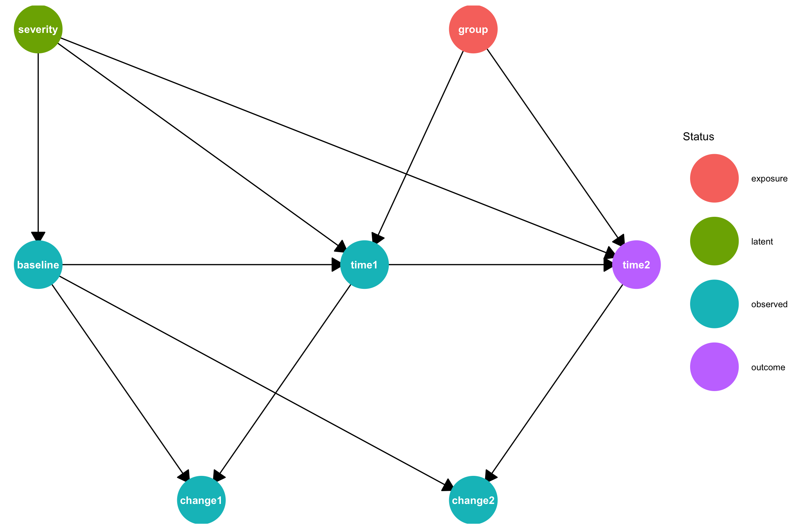
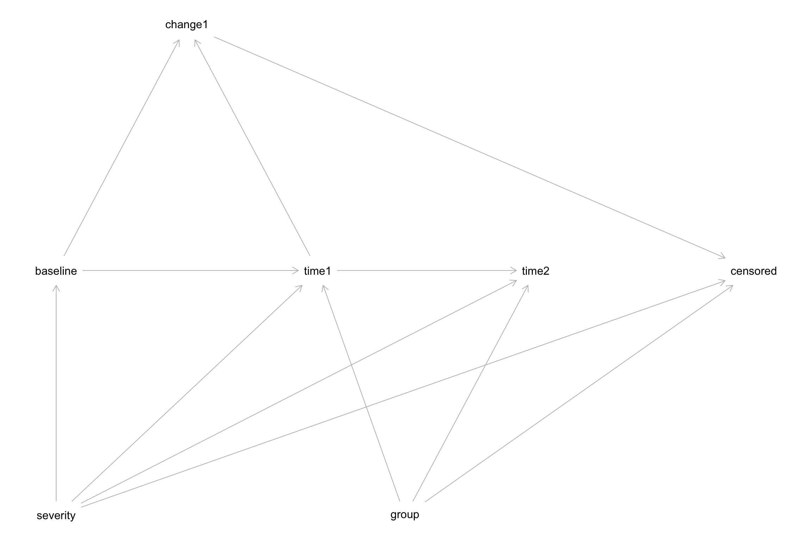
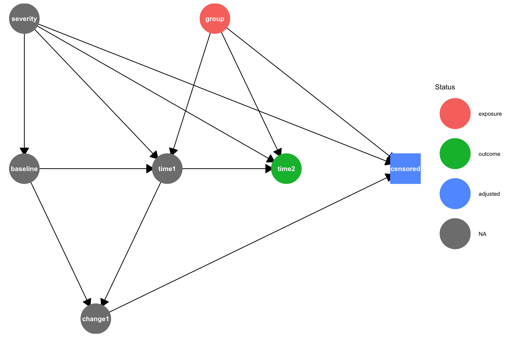
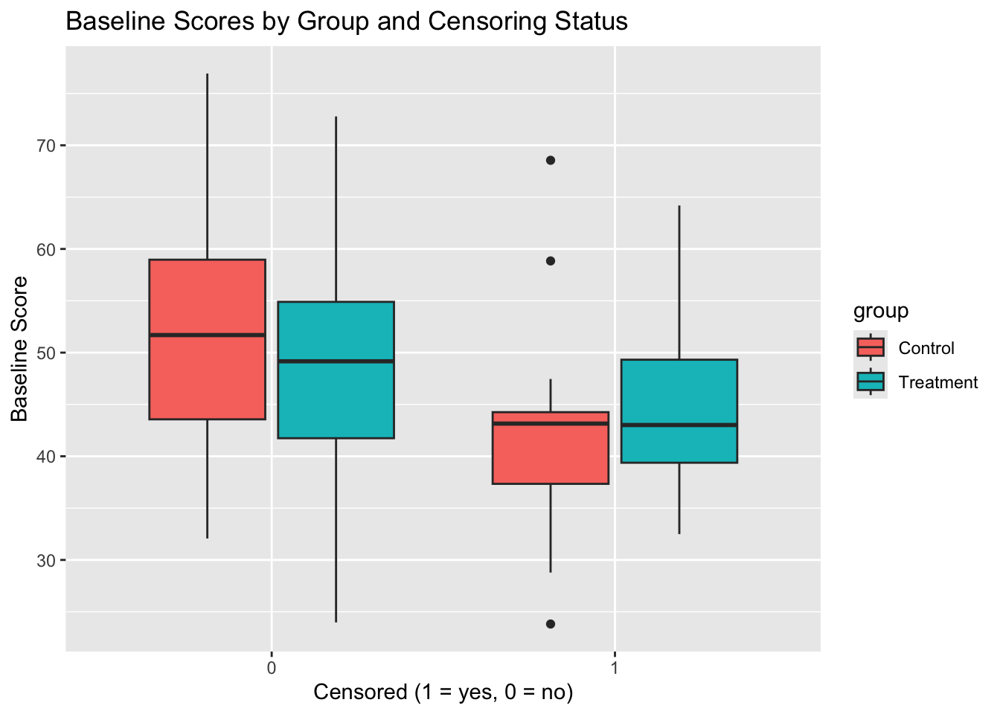
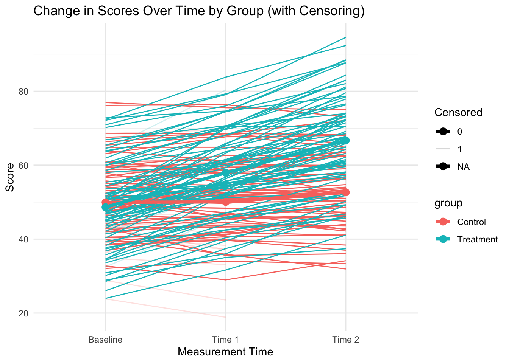
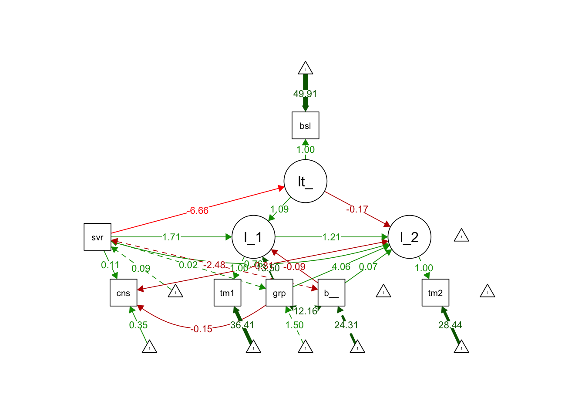
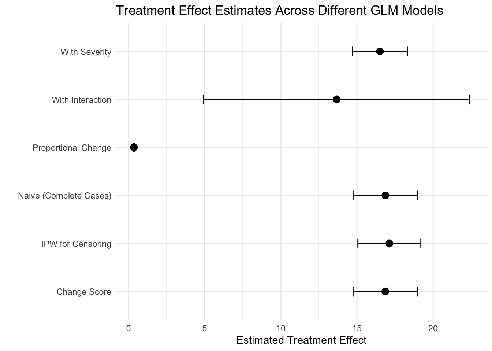
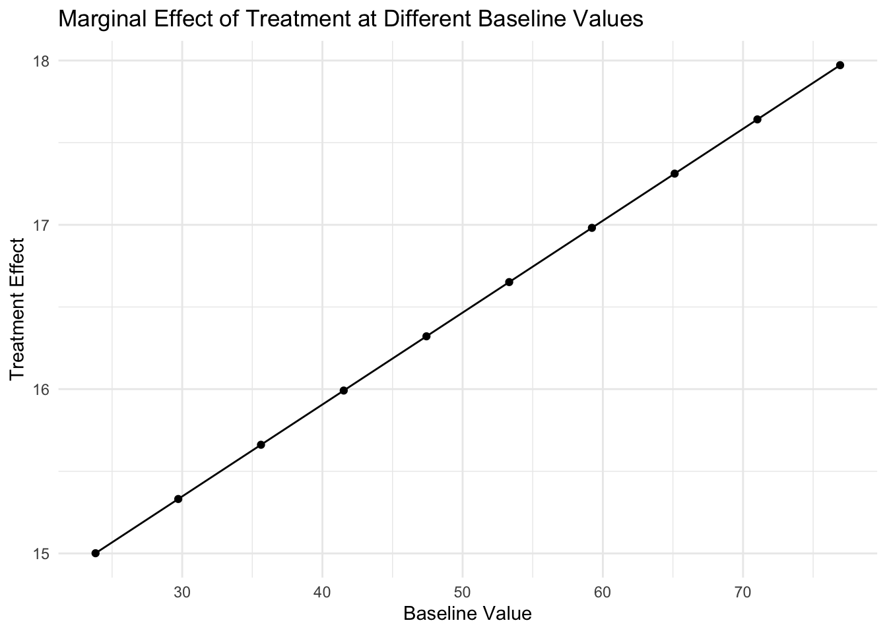
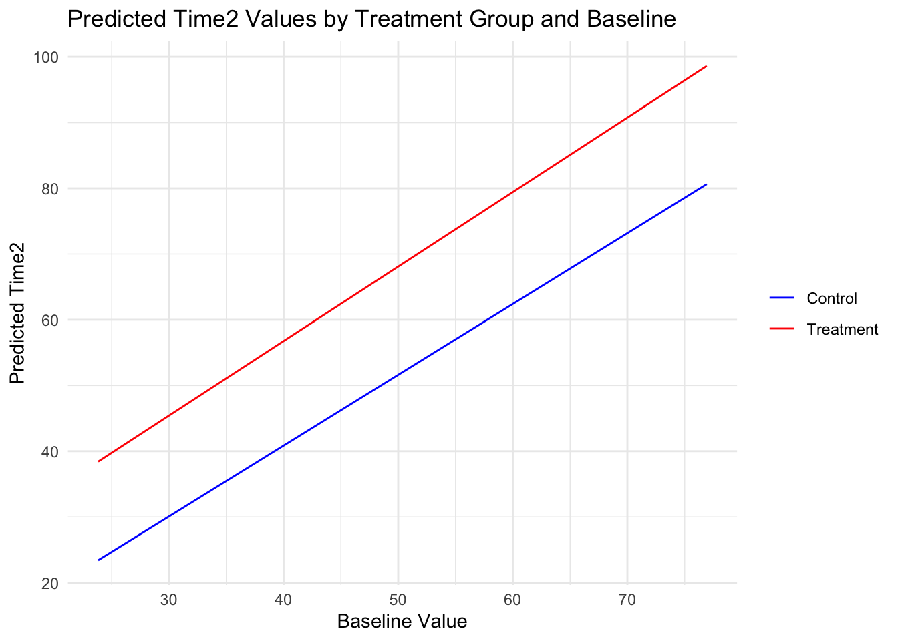
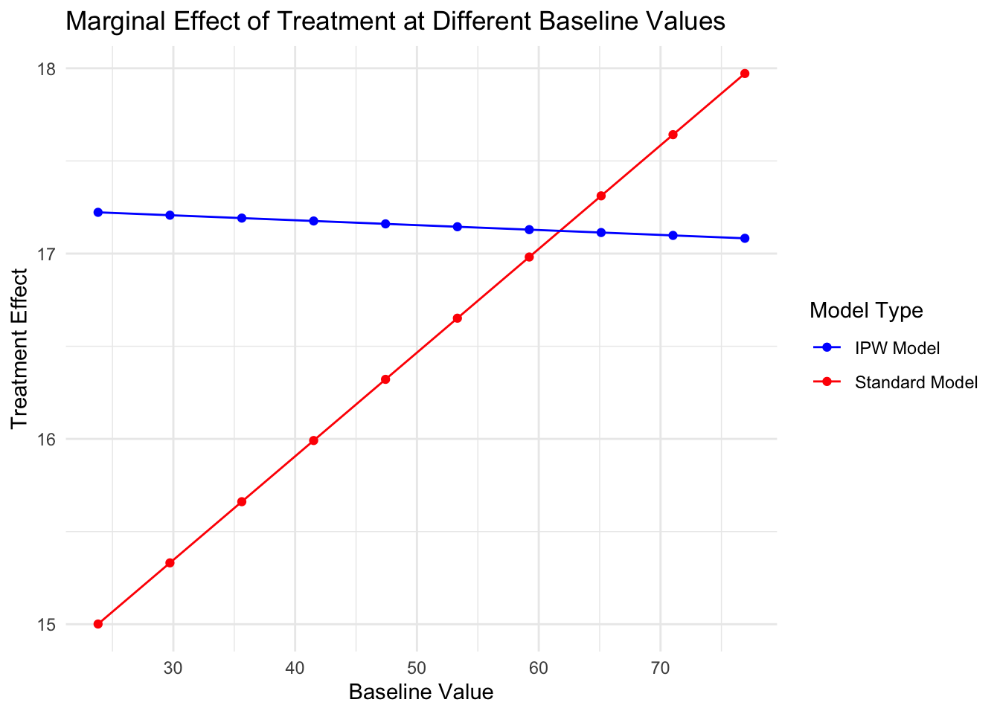

── Conflicts ────────────────────────────────────────── tidyverse_conflicts() ──
✖ dplyr::filter() masks ggdag::filter(), stats::filter()
✖ dplyr::lag() masks stats::lag()
ℹ Use the conflicted package (<http://conflicted.r-lib.org/>) to force all conflicts to become errors
The goal of this notebook is to explain how to estimate the average treatment effect of a dichotomous (binary) treatment on change from a continuous baseline measure (Tennant et al. 2021) under three different scenarios:
A Randomized Controlled Trial (RCT) with no loss to follow-up.
An RCT with loss to follow-up.
An observational study with treatment confounders and loss to follow-up.
Each approach uses the same core data generating model with a proportional treatment effect, where the treatment works better in patients with lower baseline scores.
Randomized Controlled Trial With No Loss to Follow-Up
In this simulation:
- severity is a latent (unobserved) variable that affects:
Baseline scores (sicker patients have lower scores)
Treatment effect (treatment works better for sicker patients)
Note that in this model severity is not affected by treatment or time. It is set at baseline for each patient and remains the same for each time period.
The Causal DAG for this data generating model is shown below.
# Create the DAG using dagifydagRCT <-dagify( baseline ~ severity, time1 ~ baseline + group + severity, change1 ~ baseline + time1, time2 ~ group + time1 + severity, change2 ~ baseline + time2,exposure ="group",outcome ="time2",coords =data.frame(name =c("baseline", "severity", "group", "time1", "change1", "time2", "change2"),x =c(0, 0, 4, 3, 1.5, 5.5, 4),y =c(1, 2, 2, 1, 0, 1, 0) ))# Change status of severity to indicate that it is a latent variablelatents(dagRCT) ="severity"# Convert the dagitty graph to a ggdag group for prettier printingtidy_dagRCT <-tidy_dagitty(dagRCT) # Plot with custom node shapes# Get the status (exposure, outcome) information and set variables without a status to "observed"status_data <-ggdag_status(tidy_dagRCT)$data %>%mutate(status =ifelse(is.na(status), "observed", as.character(status)))#status_data <- status_data %>% mutate(gstatus = as.character(status), gstatus = ifelse(name == "censored", "adjusted", as.character(status)), # gstatus = factor(gstatus,levels = c(levels(status), "adjusted")))# Plot with custom node shapes while preserving status coloringggplot(status_data, aes(x = x, y = y, xend = xend, yend = yend)) +geom_dag_edges(arrow_directed = grid::arrow(length =unit(0.5, "cm"), type ="closed")) +geom_dag_point(aes(color = status), size =24) +geom_dag_text(color ="white") +scale_shape_manual(values =c(circle =16, square =15), guide ="none") +scale_color_discrete(name ="Status", na.value ="grey50") +theme_dag() +theme(legend.position ="right")

Now let’s simulate data for the RCT. This simulates and retains the potential outcomes Y0_time1, Y1_time1, Y0_time2 and Y1_time2 for all patients, then sets time1 and time2 for a patient based on that patient’s assigned treatment in the data. This means that we can calculate the true causal effect from the potential outcomes.
# Set seed for reproducibilityset.seed(124)# Simulate data for demonstration# 150 participants, 2 groups (treatment and control)n <-150group <-rep(c(0, 1), each = n/2) # 0 = control, 1 = treatment# Generate baseline scores (similar for both groups)baseline <-rnorm(n, mean =50, sd =10)# Add a latent "severity" variable that affects baseline scoreseverity <-rnorm(n, mean =0, sd =1)# Adjust baseline by severity (sicker patients have lower baseline scores)baseline <- baseline -5* severity# Generate follow-up scores with proportional effectsprop_effect1 <-0.20# 20% improvement at time1 for treatment groupprop_effect2 <-0.15# Additional 15% improvement at time2 for treatment group# Calculate potential outcomes# True effect is proportional to baseline# The treatment also has a stronger effect for patients with higher severityY0_time1 <- baseline +rnorm(n, mean =0, sd =3)Y1_time1 <- baseline * (1+ prop_effect1 +0.1* severity) +rnorm(n, mean =0, sd =3)Y0_time2 <- Y0_time1 +rnorm(n, mean =0, sd =3)Y1_time2 <- Y1_time1 * (1+ prop_effect1 +0.1* severity) +rnorm(n, mean =0, sd =3)# Calculate time1 values - true effect is proportional to baseline# The treatment also has a stronger effect for patients with higher severity# time1 <- vector("numeric", n)# for (i in 1:n) {# if (group[i] == 1) {# # Treatment group: effect is proportional to baseline and increased by severity# effect_modifier <- 1 + prop_effect1 + 0.1 * severity[i]# time1[i] <- baseline[i] * effect_modifier + rnorm(1, mean = 0, sd = 3)# } else {# # Control group: small random change# time1[i] <- baseline[i] + rnorm(1, mean = 0, sd = 3)# }# }# time2 <- vector("numeric", n)# for (i in 1:n) {# if (group[i] == 1) {# # Treatment group: additional effect proportional to time1# effect_modifier <- 1 + prop_effect2 + 0.05 * severity[i]# time2[i] <- time1[i] * effect_modifier + rnorm(1, mean = 0, sd = 3)# } else {# # Control group: small random change# time2[i] <- time1[i] + rnorm(1, mean = 0, sd = 3)# }# }# Set the observed time1 and time2 based on treatment (group) assignmenttime1 <-ifelse(group ==0, Y0_time1, Y1_time1)time2 <-ifelse(group ==0, Y0_time2, Y1_time2)# Create data framedata <-data.frame(id =1:n,group =factor(group, labels =c("Control", "Treatment")),baseline = baseline,time1 = time1,time2 = time2,Y0_time1 = Y0_time1,Y1_time1 = Y1_time1,Y0_time2 = Y0_time2,Y1_time2 = Y1_time2,severity = severity # Include the latent severity variable)# Create change scores for the full datasetdata$change1 <- data$time1 - data$baselinedata$change2 <- data$time2 - data$baselinedata
For publication ready tables, we can use gtsummary. Here is the cannonical Table 1:
library(gtsummary)table1 <- data |>tbl_summary()table1
Characteristic
N = 1501
id
76 (38, 113)
group
Control
75 (50%)
Treatment
75 (50%)
baseline
50 (43, 57)
time1
55 (46, 64)
time2
60 (48, 71)
Y0_time1
50 (43, 57)
Y1_time1
58 (52, 68)
Y0_time2
50 (43, 57)
Y1_time2
69 (60, 79)
severity
-0.08 (-0.66, 0.51)
change1
3 (0, 10)
change2
6 (-1, 19)
1 Median (Q1, Q3); n (%)
And here is the Canonical Table 2. This shows a significant difference between time2 for the treatment and control groups.
table2 <-tbl_summary(data, by = group) |>add_p() |>bold_labels()table2
Characteristic
Control
N = 751
Treatment
N = 751
p-value2
id
38 (19, 57)
113 (94, 132)
<0.001
baseline
50 (42, 56)
50 (44, 58)
0.6
time1
51 (43, 57)
61 (52, 68)
<0.001
time2
51 (41, 57)
71 (61, 85)
<0.001
Y0_time1
51 (43, 57)
50 (43, 57)
0.9
Y1_time1
57 (51, 66)
61 (52, 68)
0.2
Y0_time2
51 (41, 57)
49 (43, 58)
0.8
Y1_time2
66 (59, 77)
71 (61, 85)
0.14
severity
-0.23 (-0.69, 0.51)
0.02 (-0.61, 0.58)
0.3
change1
0 (-3, 2)
10 (6, 14)
<0.001
change2
-1 (-3, 3)
19 (13, 30)
<0.001
1 Median (Q1, Q3)
2 Wilcoxon rank sum test
With all the potential outcomes we can calculate the Average Treatment Effect of the treatment on time2 as:
mean(data$Y1_time2) -mean(data$Y0_time2)
[1] 20.22007
This is just the mean of the raw individual treatment effects:
mean(data$Y1_time2 - data$Y0_time2)
[1] 20.22007
This value is not adjusted for the baseline value of each patient.
We can also compute the difference in change scores between the treated and untreated, which is the causal estimand showing the effect of treatment, \(X\), on change in score \(Y\), where \(Y_1^x\) is the potential outcome of \(Y_1\) the follow-up score when \(X\) is set to \(x\) and \(Y_1^{x'}\) is the potential outcome of …
When we have both potential outcomes for the populations, this is identical to the equations above, because the baselines cancel out across the two means below. In Equation 1
While there is only one measured covariate here (baseline) a covariate balance plot showing the standardized mean differences between covariates in the treated and untreated groups (treatment mean - control mean) will show whether there is covariate imbalance due to the small sample size. Here, we include the latent variable severity. Even though we have an RCT, both covariates are skewed to the right.
There is some controversy over how to measure total effect of a treatment on change from baseline. If the baseline values of the treatment and control group are balanced, then an unbiased average treatment effect is just the mean of time2 for those in the treatment group minus the mean for those in the control group. In an RCT with sufficient sample size, the baselines are expected to be balanced. Let’s check our data:
data %>%group_by(group) %>%summarize(meanBaseline =mean(baseline))
# A tibble: 2 × 2
group meanBaseline
<fct> <dbl>
1 Control 50.0
2 Treatment 50.5
With the relatively small sample size, the baseline means are close, but not perfectly balanced. This could bias our effect estimate if we simply use the difference in means of time2 between Treatment and Control. The means of time2 for the Control and Treatment groups are:
means <- data %>%group_by(group) %>%summarize(mean =mean(time2))means
# A tibble: 2 × 2
group mean
<fct> <dbl>
1 Control 49.8
2 Treatment 71.9
Subtracting these to get the average treatment effect is:
We can also do a t-test to test for difference in means for time2 between the treatment and control groups:
t.test(time2 ~ group, data = data)
Welch Two Sample t-test
data: time2 by group
t = -9.2943, df = 126.84, p-value = 5.426e-16
alternative hypothesis: true difference in means between group Control and group Treatment is not equal to 0
95 percent confidence interval:
-26.74824 -17.35770
sample estimates:
mean in group Control mean in group Treatment
49.80446 71.85743
Here, we see that the means are statistically significantly different.
If the baseline values are unbalanced, the effect estimate of the difference in means of time2 will be biased. This is why many analysts recommend always using analysis of covariance (ANCOVA) where the outcome is regressed on the treatment and adjusted for the baseline value:
res <-lm(time2 ~ group + baseline, data = data)summary(res)
Call:
lm(formula = time2 ~ group + baseline, data = data)
Residuals:
Min 1Q Median 3Q Max
-27.399 -5.672 -0.532 5.751 41.044
Coefficients:
Estimate Std. Error t value Pr(>|t|)
(Intercept) -4.8355 4.1091 -1.177 0.241
groupTreatment 21.4722 1.5712 13.666 <2e-16 ***
baseline 1.0938 0.0792 13.811 <2e-16 ***
---
Signif. codes: 0 '***' 0.001 '**' 0.01 '*' 0.05 '.' 0.1 ' ' 1
Residual standard error: 9.618 on 147 degrees of freedom
Multiple R-squared: 0.7252, Adjusted R-squared: 0.7214
F-statistic: 193.9 on 2 and 147 DF, p-value: < 2.2e-16
Here we see that the causal effect of group on time2 when adjusted for baseline is coef(res)["group"]. Note above that the baseline means between treatment and control differ by around .5, which explains the difference between the effect as computed on the difference in the mean of time2 between groups, vs. the regression results.
We can use gtsummary for a nicer view of the results:
Interpretation: After adjusting for baseline differences, mean time2 increased by `res$ units for those receiving the treatment compared with those who did not receive the treatment. We can see this here:
The following object is masked from 'package:ggplot2':
last_plot
The following object is masked from 'package:stats':
filter
The following object is masked from 'package:graphics':
layout
mean_baseline =mean(data$baseline)# Calculate predictions at mean baseline for each grouppred1 <-predict(res, newdata =data.frame(group =levels(data$group)[1], baseline = mean_baseline))pred2 <-predict(res, newdata =data.frame(group =levels(data$group)[2], baseline = mean_baseline))# Create the plotp <-ggplot(data, aes(x = baseline, y = time2, color = group)) +# Add pointsgeom_point(alpha =0.6, size =2) +# Add regression lines for each groupgeom_smooth(method ="lm", se =TRUE, alpha =0.2) +# Add vertical line at mean baselinegeom_vline(xintercept = mean_baseline, linetype ="dashed", color ="black", size =0.8) +# Add points for the endpoints of the vertical line (these will be invisible)geom_point(aes(x = mean_baseline, y = pred1, text =paste("Group:", levels(data$group)[1], "<br>Baseline:", round(mean_baseline, 2),"<br>Predicted Time2:", round(pred1, 2))),color ="red", size =3, alpha =0.8, inherit.aes =FALSE) +geom_point(aes(x = mean_baseline, y = pred2,text =paste("Group:", levels(data$group)[2], "<br>Baseline:", round(mean_baseline, 2),"<br>Predicted Time2:", round(pred2, 2))),color ="red", size =3, alpha =0.8, inherit.aes =FALSE) +# Add the vertical line showing difference between groups at mean baselinegeom_segment(x = mean_baseline, xend = mean_baseline,y = pred1,yend = pred2,color ="red", size =2,arrow =arrow(ends ="both", angle =90, length =unit(0.1, "inches")) ) +# Customize the plotlabs(title ="Time2 vs Baseline by Group",subtitle =paste("Vertical line shows difference between groups at mean baseline (", round(mean_baseline, 2), ")", sep =""),x ="Baseline",y ="Time2",color ="Group" ) +# Clean themetheme_minimal() +theme(plot.title =element_text(size =14, face ="bold"),plot.subtitle =element_text(size =11, color ="gray40"),legend.position ="bottom" )
Warning: Using `size` aesthetic for lines was deprecated in ggplot2 3.4.0.
ℹ Please use `linewidth` instead.
Warning in geom_point(aes(x = mean_baseline, y = pred1, text = paste("Group:",
: Ignoring unknown aesthetics: text
Warning in geom_point(aes(x = mean_baseline, y = pred2, text = paste("Group:",
: Ignoring unknown aesthetics: text
# Convert to plotly for interactive tooltipsggplotly(p, tooltip ="text") %>%layout(title =list(text ="Time2 vs Baseline by Group<br><sub>Vertical line shows difference between groups at mean baseline</sub>"))
Warning: Use of `data$group` is discouraged.
ℹ Use `group` instead.
Warning in geom_point(aes(x = mean_baseline, y = pred1, text = paste("Group:", : All aesthetics have length 1, but the data has 150 rows.
ℹ Please consider using `annotate()` or provide this layer with data containing
a single row.
Warning: Use of `data$group` is discouraged.
ℹ Use `group` instead.
Warning in geom_point(aes(x = mean_baseline, y = pred2, text = paste("Group:", : All aesthetics have length 1, but the data has 150 rows.
ℹ Please consider using `annotate()` or provide this layer with data containing
a single row.
`geom_smooth()` using formula = 'y ~ x'
Recall that the treatment effect in this model is proportional to the baseline value and increased by severity, a latent variable. The average treatment effect reported in the analysis above is the average across all baseline values in the model.
Simulate proportional treatment effect on change from baseline in an RCT with censoring
For data with censoring and proportional treatment effects:
This simulation is identical to the one above, but with some subjects dropping out of the study prior to time2 being measured. Changes noted in bold.
- severity is latent variable that affects:
Baseline scores (sicker patients have lower scores)
Treatment effect (treatment works better for sicker patients)
Censoring probability (sicker patients more likely to drop out)
- Treatment group participants are less likely to be censored
- Participants with less improvement are more likely to be censored
The Causal DAG for this data generating model is shown below.
library(dagitty)library(ggdag)library(tidyverse)# Create the DAG using dagifydag1 <-dagify( baseline ~ severity, time1 ~ baseline + group + severity, change1 ~ baseline + time1, censored ~ change1 + group + severity, time2 ~ group + time1 + severity,exposure ="group",outcome ="time2",coords =data.frame(name =c("baseline", "severity", "group", "time1", "change1", "censored", "time2"),x =c(0, 0, 4, 3, 1.5, 8, 5.5),y =c(1, 2, 2, 1, 0, 1, 1) ))# Indicate that `censored` is adjusted since we only have data for patients who are not censored, censored is forced to equal 0adjustedNodes(dag1) <-"censored"plot(dag1)

#List all paths from treatment `group` to outcome `time2`# `paths` currently ignores the adjusted nodes when determining which paths are open, so we have to specify adjusted nodes in the callpaths(dag1, Z =adjustedNodes(dag1))
# Print the adjustment sets (if any)adjustmentSets(dag1)tidy_dag1 <-tidy_dagitty(dag1) %>%mutate(shape =ifelse(name =="censored", "square", "circle"))# Indicate that `censored` is adjusted for in this modeltidy_dag1 <-adjust_for(tidy_dag1, "censored")# Plot with custom node shapes# Get the status (exposure, outcome) informationstatus_data <-ggdag_status(tidy_dag1)$datastatus_data <- status_data %>%mutate(gstatus =as.character(status), gstatus =ifelse(name =="censored", "adjusted", as.character(status)), gstatus =factor(gstatus,levels =c(levels(status), "adjusted")))# Plot with custom node shapes while preserving status coloringggplot(status_data, aes(x = x, y = y, xend = xend, yend = yend)) +geom_dag_edges(arrow_directed = grid::arrow(length =unit(0.5, "cm"), type ="closed")) +geom_dag_point(aes(color = gstatus, shape = shape), size =24) +geom_dag_text(color ="white") +scale_shape_manual(values =c(circle =16, square =15), guide ="none") +scale_color_discrete(name ="Status", na.value ="grey50") +theme_dag() +theme(legend.position ="right")
Warning: Removed 4 rows containing missing values or values outside the scale range
(`geom_dag_point()`).

The censored variable is shown with a square around it to indicate that by analyzing only uncensored patients, censored is adjusted for in the analysis. Since all arrows point into censored, any path from treatment group to effect time2 that includes censored will transmit spurious association through censored unless the path is blocked at another point.
To see this, lets look at all paths (causal and non-causal) from group to time2. A causal path is one in which arrows point from the treatment group to the outcome time2. Noncausal paths are those with at least one arrow pointing back toward the treatment.
# `paths` currently ignores the adjusted nodes when determining which paths are open, so we have to specify the adjusted nodes in the callpaths(dag1, Z =adjustedNodes(dag1))
We see that there are 18 paths from group to time2. $open is a boolean list showing whether each path is open or closed. All of these paths are open and since many of these paths are noncausal “backdoor” paths, meaning the arrows do not all point from group to time2 this means that if we measure the association between group and time2 in the data, that association is likely to exhibit bias from confounding. For example, paths 1 through 11 are all backdoor paths that go through censored. A collider is a variable on a path in which both arrows point toward it. As you can see, censored is a collider on every path it appears in. Colliders block association when they are not adjusted, but allow association to flow and bias the analysis when they are adjusted.
To properly measure the total causal effect of group on time2 we need to measure the association that flows through all paths that point from group to time2. Let’s use paths to list only the causal paths:
paths(dag1, Z =adjustedNodes(dag1), directed =TRUE)
There are two causal paths, both open. To measure the total causal effect, we need to block the non-causal open paths by adjusting for variables, if possible. We can use ggdag to list the adjustment sets for the total causal effect of group on time2. This returns nothing because there is no way to adjust variables to block the open path caused through the collider censored.
adjustmentSets(dag1, effect ="total")
We will use IP Weighting for censoring below, but before that, lets analyze this dataset as if there were no loss to follow-up.
Same model with no loss to follow-up
The same data generating model above includes time2_all with outcome values for all patients. Without Censoring the Causal DAG for time2_all looks like this:
library(dagitty)library(ggdag)library(tidyverse)# Create the DAG using dagitifydag_noloss <-dagify( baseline ~ severity, time1 ~ baseline + group + severity, change1 ~ baseline + time1, time2_all ~ group + time1 + severity,exposure ="group",outcome ="time2_all",coords =data.frame(name =c("baseline", "severity", "group", "time1", "change1", "censored", "time2_all"),x =c(0, 0, 4, 3, 1.5, 8, 5.5),y =c(1, 2, 2, 1, 0, 1, 1) ))tidy_dag_noloss <-tidy_dagitty(dag_noloss)# Plot with custom node shapes# Get the status (exposure, outcome) informationstatus_data <-ggdag_status(tidy_dag_noloss)$datastatus_data <- status_data %>%mutate(gstatus =as.character(status), gstatus =ifelse(name =="censored", "adjusted", as.character(status)), gstatus =factor(gstatus,levels =c(levels(status), "adjusted")))# Plot with custom node shapes while preserving status coloringggplot(status_data, aes(x = x, y = y, xend = xend, yend = yend)) +geom_dag_edges(arrow_directed = grid::arrow(length =unit(0.5, "cm"), type ="closed")) +geom_dag_point(aes(color = gstatus), size =24) +geom_dag_text(color ="white") +scale_shape_manual(values =c(circle =16, square =15), guide ="none") +scale_color_discrete(name ="Status", na.value ="grey50") +theme_dag() +theme(legend.position ="right")
Generate Data According to the Two Causal DAGs Above
# Install and load required packages# Uncomment to install packages if needed# install.packages(c("lavaan", "semPlot", "tidyverse", "psych"))library(lavaan)
This is lavaan 0.6-19
lavaan is FREE software! Please report any bugs.
library(semPlot)library(tidyverse)library(psych)
Attaching package: 'psych'
The following object is masked from 'package:lavaan':
cor2cov
The following objects are masked from 'package:ggplot2':
%+%, alpha
# Set seed for reproducibilityset.seed(123)# Simulate data for demonstration# 150 participants, 2 groups (treatment and control)n <-150group <-rep(c(0, 1), each = n/2) # 0 = control, 1 = treatment# Generate baseline scores (similar for both groups)baseline <-rnorm(n, mean =50, sd =10)# Add a latent "severity" variable that affects both baseline and censoring# This creates the missing not at random (MNAR) scenarioseverity <-rnorm(n, mean =0, sd =1)# Adjust baseline by severity (sicker patients have lower baseline scores)baseline <- baseline -5* severity# Generate follow-up scores with proportional effectsprop_effect1 <-0.20# 20% improvement at time1 for treatment groupprop_effect2 <-0.15# Additional 15% improvement at time2 for treatment group# Calculate time1 values - true effect is proportional to baseline# The treatment also has a stronger effect for patients with higher severitytime1 <-vector("numeric", n)for (i in1:n) {if (group[i] ==1) {# Treatment group: effect is proportional to baseline and increased by severity effect_modifier <-1+ prop_effect1 +0.1* severity[i] time1[i] <- baseline[i] * effect_modifier +rnorm(1, mean =0, sd =3) } else {# Control group: small random change time1[i] <- baseline[i] +rnorm(1, mean =0, sd =3) }}# Calculate time2 valuestime2 <-vector("numeric", n)for (i in1:n) {if (group[i] ==1) {# Treatment group: additional effect proportional to time1 effect_modifier <-1+ prop_effect2 +0.05* severity[i] time2[i] <- time1[i] * effect_modifier +rnorm(1, mean =0, sd =3) } else {# Control group: small random change time2[i] <- time1[i] +rnorm(1, mean =0, sd =3) }}# Save time2 values prior to censoring to create a model without censoringtime2_all <- time2# Generate censoring indicators# Higher probability of censoring (dropout) for:# 1. Sicker patients (higher severity)# 2. Control group participants (treatment has benefit that keeps people engaged)# 3. Those with smaller improvements from baseline to time1# Calculate change from baseline to time1change_time1 <- time1 - baseline# Calculate censoring probabilities# Logit model for censoringlogit_censoring <--2+1.5* severity +# Sicker patients more likely to drop out-0.5* group +# Treatment group less likely to drop out-0.05* change_time1 # Those improving less likely to drop out# Convert to probabilityp_censored <-1/ (1+exp(-logit_censoring))# Generate censoring indicator (1 = censored/dropped out, 0 = observed)censored <-rbinom(n, 1, p_censored)# Apply censoring to the data (set values to NA)time2[censored ==1] <-NA# Create data framedata <-data.frame(id =1:n,group =factor(group, labels =c("Control", "Treatment")),baseline = baseline,time1 = time1,time2 = time2,time2_all = time2_all,severity = severity, # Include the latent severity variablecensored = censored # Include the censoring indicator)# Create change scores for the full datasetdata$change1 <- data$time1 - data$baselinedata$change2 <- data$time2 - data$baselinedata
ideal <-glm(time2_all ~ baseline + group, data = data)summary(ideal)
Call:
glm(formula = time2_all ~ baseline + group, data = data)
Coefficients:
Estimate Std. Error t value Pr(>|t|)
(Intercept) 2.77655 2.34170 1.186 0.238
baseline 0.95396 0.04468 21.352 <2e-16 ***
groupTreatment 17.65259 1.00390 17.584 <2e-16 ***
---
Signif. codes: 0 '***' 0.001 '**' 0.01 '*' 0.05 '.' 0.1 ' ' 1
(Dispersion parameter for gaussian family taken to be 37.66081)
Null deviance: 32772.1 on 149 degrees of freedom
Residual deviance: 5536.1 on 147 degrees of freedom
AIC: 974.94
Number of Fisher Scoring iterations: 2
The effect estimate here is 17.65, which is higher than the difference in group means of 16.38.
When there is loss to follow-up, the näive approach to estimating the average treatment effect is to ignore patients who were censored, which means removing them from the data. The average treatment effect is then the mean outcome (time2) of the treated group minus the mean outcome (time2) of the untreated in the remaining patients. Here we return to using time2, which has missing values for censored patients.
group_means_uncensored <- data %>%filter(censored ==0) %>%group_by(group) %>%summarize(mean(time2))group_means_uncensored
# A tibble: 2 × 2
group `mean(time2)`
<fct> <dbl>
1 Control 52.7
2 Treatment 66.7
Ignoring censored patients underestimates the treatment effect, because patients who have higher baseline values have higher treatment effects, but are also more likely to drop out (be lost to follow-up):
We can also use logistic regression to do the same näive analysis, using the ANCOVA approach of adjusting for baseline.
model_naive <-lm(time2 ~ group + baseline,data =subset(data, !is.na(time2)))model_naive
Call:
lm(formula = time2 ~ group + baseline, data = subset(data, !is.na(time2)))
Coefficients:
(Intercept) groupTreatment baseline
4.506 16.862 0.929
This result is closer to the true result of 17.65
One appropriate way to analyze an RCT with censored patients is by using IP (Inverse Probability) weighting to adjust the data for the probability of remaining in the study. This creates a pseudo-population where the outcome for patients who were uncensored gets weighted by their inverse probability of staying in the study as calculated using baseline covariates.
To do this, we first use logistic regression to create a model that predicts whether a patient will be censored based on group (the treatment) and baseline HBA1C.
# Model for censoring process - modeling factors affecting dropoutmodel_censoring <-glm(censored ~ group + baseline + time1, data = data,family =binomial(link ="logit"))summary(model_censoring)
Call:
glm(formula = censored ~ group + baseline + time1, family = binomial(link = "logit"),
data = data)
Coefficients:
Estimate Std. Error z value Pr(>|z|)
(Intercept) 2.179932 1.285029 1.696 0.0898 .
groupTreatment -1.747864 0.954461 -1.831 0.0671 .
baseline -0.077423 0.079859 -0.969 0.3323
time1 0.002417 0.073945 0.033 0.9739
---
Signif. codes: 0 '***' 0.001 '**' 0.01 '*' 0.05 '.' 0.1 ' ' 1
(Dispersion parameter for binomial family taken to be 1)
Null deviance: 114.000 on 149 degrees of freedom
Residual deviance: 97.511 on 146 degrees of freedom
AIC: 105.51
Number of Fisher Scoring iterations: 6
The model for censoring is consistent with the data generating process in which there is a Higher probability of censoring (dropout) for:
Sicker patients (higher severity)
Control group participants (treatment has benefit that keeps people engaged)
Those with smaller improvements from baseline to time1
Now we can predict the probability of remaining in the study (not being censored) by using the regression results on each patient in the study and calculating 1 - p(censored) Look at the probability of remaining in the study to convince yourself that the model is producing appropriate results. For example, patients in the treatment group are more likely to remain in the study, as expected.
data$p_observed <-1-predict(model_censoring, type ="response")data
We can compare covariates based on treatment group. Notice that those in the control group are more likely to be censored and therefore have a lower probability of being observed at time2:
table2 <-tbl_summary(data, by = group) |>add_p() |>bold_labels()table2
Characteristic
Control
N = 751
Treatment
N = 751
p-value2
id
38 (19, 57)
113 (94, 132)
<0.001
baseline
50 (42, 58)
48 (41, 55)
0.5
time1
50 (42, 59)
56 (52, 66)
<0.001
time2
52 (45, 61)
67 (57, 76)
<0.001
Unknown
15
4
time2_all
50 (43, 60)
66 (58, 76)
<0.001
severity
-0.12 (-0.57, 0.62)
0.06 (-0.52, 0.85)
0.6
censored
15 (20%)
4 (5.3%)
0.007
change1
0.2 (-2.1, 2.5)
9.2 (5.8, 11.4)
<0.001
change2
1 (-2, 3)
17 (14, 21)
<0.001
Unknown
15
4
p_observed
0.82 (0.72, 0.90)
0.96 (0.93, 0.98)
<0.001
1 Median (Q1, Q3); n (%)
2 Wilcoxon rank sum test; Pearson’s Chi-squared test
Now we add the IP weights to the data
# Create weights as inverse of probability of being observeddata$ipw <-1/ data$p_observed
Finally, we can do a second regression with the IP weights to estimate the average treatment effect:
# Weighted analysismodel_ipw <-glm(time2 ~ group + baseline, data =subset(data, !is.na(time2)),weights = ipw)summary(model_ipw)
Call:
glm(formula = time2 ~ group + baseline, data = subset(data, !is.na(time2)),
weights = ipw)
Coefficients:
Estimate Std. Error t value Pr(>|t|)
(Intercept) 4.26106 2.51950 1.691 0.0932 .
groupTreatment 16.87712 1.04851 16.096 <2e-16 ***
baseline 0.93346 0.04761 19.605 <2e-16 ***
---
Signif. codes: 0 '***' 0.001 '**' 0.01 '*' 0.05 '.' 0.1 ' ' 1
(Dispersion parameter for gaussian family taken to be 40.56733)
Null deviance: 28883.2 on 130 degrees of freedom
Residual deviance: 5192.6 on 128 degrees of freedom
AIC: 845.73
Number of Fisher Scoring iterations: 2
FInally we use this model and G-Computation to create the counterfactuals (the outcomes when treated and untreaded) for all patients.
To do this, we copy the dataset, set all patients to the Treatment group, then use the model to predict time2_1. Then we do the same for the control to create time2_0. The difference in means give us the effect.
# Copy datasetdatap <- data# Set all patients to Treatmentdatap <- datap %>%mutate(group ="Treatment")# Predict and store time2_1time2_1 <-predict(model_ipw, newdata = datap, type ="response")# Set all patients to Controldatap <- datap %>%mutate(group ="Control")# Predict time2_0 (for control)time2_0 <-predict(model_ipw, newdata = datap, type ="response")# Find the difference in meansmean(time2_1) -mean(time2_0)
[1] 16.87712
This estimand does not adjust the outcome for baseline scores.
Analyzing Censored Dataset
# Create interaction term for the model - do this BEFORE creating the uncensored subsetdata$group_numeric <-as.numeric(data$group) -1# Convert to 0/1data$baseline_by_group <- data$baseline * data$group_numeric# Create uncensored subset - AFTER creating all derived variablesdata_uncensored <-subset(data, censored ==0)print(paste("Number of censored observations:", sum(data$censored)))
[1] "Number of censored observations: 19"
print(paste("Proportion of censored observations:", mean(data$censored)))
[1] "Proportion of censored observations: 0.126666666666667"
# Basic visualization - compare baseline by censoring statusggplot(data, aes(x =factor(censored), y = baseline, fill = group)) +geom_boxplot() +ggtitle("Baseline Scores by Group and Censoring Status") +xlab("Censored (1 = yes, 0 = no)") +ylab("Baseline Score")

# Create change scoresdata$change1 <- data$time1 - data$baselinedata$change2 <- data$time2 - data$baseline# Longitudinal plot with censoring indicateddata_long <- data %>%pivot_longer(cols =c(baseline, time1, time2),names_to ="time",values_to ="score") %>%mutate(time =factor(time, levels =c("baseline", "time1", "time2"),labels =c("Baseline", "Time 1", "Time 2")))# Add transparency based on censoring (censored data points are more transparent)ggplot(data_long, aes(x = time, y = score, group =interaction(id, group), color = group, alpha =factor(censored))) +geom_line() +scale_alpha_manual(values =c("0"=1, "1"=0.2), name ="Censored") +stat_summary(data =subset(data_long, !(time =="Time 2"&is.na(score))),aes(group = group), fun = mean, geom ="line", size =1.5) +stat_summary(data =subset(data_long, !(time =="Time 2"&is.na(score))),aes(group = group), fun = mean, geom ="point", size =3) +theme_minimal() +ggtitle("Change in Scores Over Time by Group (with Censoring)") +ylab("Score") +xlab("Measurement Time")
Warning: Removed 19 rows containing missing values or values outside the scale range
(`geom_line()`).

# Define SEM model for uncensored data# We need a separate model because the censoring variable has no variance in the uncensored subsetmodel_uncens <-' # Latent variable for true change change =~ change1 + change2 # Regression paths: group, baseline, and severity predict change # Group represents treatment effect # Baseline represents the proportional nature of the effect # Severity represents the hidden confounding variable change ~ group + baseline + severity # Allow residual correlation between time points change1 ~~ change2'# Fit the model using only uncensored data (creates bias)fit_uncens <-sem(model_uncens, data = data_uncensored)
Warning: lavaan->lav_model_vcov():
Could not compute standard errors! The information matrix could not be
inverted. This may be a symptom that the model is not identified.
lavaan 0.6-19 ended normally after 45 iterations
Estimator ML
Optimization method NLMINB
Number of model parameters 8
Number of observations 131
Model Test User Model:
Test statistic 3.983
Degrees of freedom 1
P-value (Chi-square) 0.046
Model Test Baseline Model:
Test statistic 471.982
Degrees of freedom 7
P-value 0.000
User Model versus Baseline Model:
Comparative Fit Index (CFI) 0.994
Tucker-Lewis Index (TLI) 0.955
Loglikelihood and Information Criteria:
Loglikelihood user model (H0) -677.067
Loglikelihood unrestricted model (H1) -675.076
Akaike (AIC) 1370.135
Bayesian (BIC) 1393.136
Sample-size adjusted Bayesian (SABIC) 1367.833
Root Mean Square Error of Approximation:
RMSEA 0.151
90 Percent confidence interval - lower 0.017
90 Percent confidence interval - upper 0.318
P-value H_0: RMSEA <= 0.050 0.082
P-value H_0: RMSEA >= 0.080 0.858
Standardized Root Mean Square Residual:
SRMR 0.019
Parameter Estimates:
Standard errors Standard
Information Expected
Information saturated (h1) model Structured
Latent Variables:
Estimate Std.Err z-value P(>|z|) Std.lv Std.all
change =~
change1 1.000 5.300 0.903
change2 1.931 NA 10.234 0.979
Regressions:
Estimate Std.Err z-value P(>|z|) Std.lv Std.all
change ~
group 8.567 NA 1.617 0.805
baseline 0.061 NA 0.011 0.126
severity 2.213 NA 0.417 0.372
Covariances:
Estimate Std.Err z-value P(>|z|) Std.lv Std.all
.change1 ~~
.change2 3.363 NA 3.363 0.619
Variances:
Estimate Std.Err z-value P(>|z|) Std.lv Std.all
.change1 6.338 NA 6.338 0.184
.change2 4.649 NA 4.649 0.043
.change 5.727 NA 0.204 0.204
# Model that ignores severity (misspecified)model_misspec <-' # Latent variable for true change change =~ change1 + change2 # Regression paths: only group and baseline predict change # Missing the severity variable (creates omitted variable bias) change ~ group + baseline # Allow residual correlation between time points change1 ~~ change2'# Fit the misspecified model with all data using FIMLfit_misspec <-sem(model_misspec, data = data, missing ="fiml")
Warning: lavaan->lav_model_vcov():
The variance-covariance matrix of the estimated parameters (vcov) does not
appear to be positive definite! The smallest eigenvalue (= -1.976555e+10)
is smaller than zero. This may be a symptom that the model is not
identified.
Warning: lavaan->lav_fit_cfi_lavobject():
computation of robust CFI failed.
Warning: lavaan->lav_fit_rmsea_lavobject():
computation of robust RMSEA failed.
lavaan 0.6-19 ended normally after 56 iterations
Estimator ML
Optimization method NLMINB
Number of model parameters 9
Number of observations 150
Number of missing patterns 2
Model Test User Model:
Test statistic 2.107
Degrees of freedom 0
Model Test Baseline Model:
Test statistic 450.334
Degrees of freedom 5
P-value 0.000
User Model versus Baseline Model:
Comparative Fit Index (CFI) 0.995
Tucker-Lewis Index (TLI) 1.000
Robust Comparative Fit Index (CFI) NA
Robust Tucker-Lewis Index (TLI) NA
Loglikelihood and Information Criteria:
Loglikelihood user model (H0) -751.195
Loglikelihood unrestricted model (H1) -750.141
Akaike (AIC) 1520.389
Bayesian (BIC) 1547.485
Sample-size adjusted Bayesian (SABIC) 1519.002
Root Mean Square Error of Approximation:
RMSEA 0.000
90 Percent confidence interval - lower 0.000
90 Percent confidence interval - upper 0.000
P-value H_0: RMSEA <= 0.050 NA
P-value H_0: RMSEA >= 0.080 NA
Robust RMSEA NA
90 Percent confidence interval - lower NA
90 Percent confidence interval - upper NA
P-value H_0: Robust RMSEA <= 0.050 NA
P-value H_0: Robust RMSEA >= 0.080 NA
Standardized Root Mean Square Residual:
SRMR 0.011
Parameter Estimates:
Standard errors Standard
Information Observed
Observed information based on Hessian
Latent Variables:
Estimate Std.Err z-value P(>|z|) Std.lv Std.all
change =~
change1 1.000 5.417 0.901
change2 1.911 0.072 26.529 0.000 10.350 0.969
Regressions:
Estimate Std.Err z-value P(>|z|) Std.lv Std.all
change ~
group 9.199 0.628 14.654 0.000 1.698 0.849
baseline -0.017 0.024 -0.709 0.478 -0.003 -0.035
Covariances:
Estimate Std.Err z-value P(>|z|) Std.lv Std.all
.change1 ~~
.change2 4.398 NA 4.398 0.644
Intercepts:
Estimate Std.Err z-value P(>|z|) Std.lv Std.all
.change1 -8.258 1.537 -5.373 0.000 -8.258 -1.374
.change2 -15.405 2.876 -5.356 0.000 -15.405 -1.443
Variances:
Estimate Std.Err z-value P(>|z|) Std.lv Std.all
.change1 6.801 NA 6.801 0.188
.change2 6.848 NA 6.848 0.060
.change 8.051 NA 0.274 0.274
# Fit the misspecified model with uncensored data only (double bias)fit_misspec_uncens <-sem(model_misspec, data = data_uncensored)
Warning: lavaan->lav_model_vcov():
Could not compute standard errors! The information matrix could not be
inverted. This may be a symptom that the model is not identified.
lavaan 0.6-19 ended normally after 45 iterations
Estimator ML
Optimization method NLMINB
Number of model parameters 7
Number of observations 131
Model Test User Model:
Test statistic 3.982
Degrees of freedom 0
Model Test Baseline Model:
Test statistic 427.674
Degrees of freedom 5
P-value 0.000
User Model versus Baseline Model:
Comparative Fit Index (CFI) 0.991
Tucker-Lewis Index (TLI) 1.000
Loglikelihood and Information Criteria:
Loglikelihood user model (H0) -699.221
Loglikelihood unrestricted model (H1) -697.230
Akaike (AIC) 1412.442
Bayesian (BIC) 1432.569
Sample-size adjusted Bayesian (SABIC) 1410.428
Root Mean Square Error of Approximation:
RMSEA 0.000
90 Percent confidence interval - lower 0.000
90 Percent confidence interval - upper 0.000
P-value H_0: RMSEA <= 0.050 NA
P-value H_0: RMSEA >= 0.080 NA
Standardized Root Mean Square Residual:
SRMR 0.021
Parameter Estimates:
Standard errors Standard
Information Expected
Information saturated (h1) model Structured
Latent Variables:
Estimate Std.Err z-value P(>|z|) Std.lv Std.all
change =~
change1 1.000 5.253 0.895
change2 1.932 NA 10.148 0.970
Regressions:
Estimate Std.Err z-value P(>|z|) Std.lv Std.all
change ~
group 8.747 NA 1.665 0.830
baseline -0.033 NA -0.006 -0.069
Covariances:
Estimate Std.Err z-value P(>|z|) Std.lv Std.all
.change1 ~~
.change2 4.289 NA 4.289 0.649
Variances:
Estimate Std.Err z-value P(>|z|) Std.lv Std.all
.change1 6.829 NA 6.829 0.198
.change2 6.393 NA 6.393 0.058
.change 8.037 NA 0.291 0.291
# Compare treatment effect estimates across models # We need to handle the case where some models may not have been successfully fittreatmentEffect <-data.frame(Model =character(),Estimate =numeric(),stringsAsFactors =FALSE)# Extract treatment effect from model1 if(exists("fit_cens")) { idx <-which(parameterEstimates(fit_cens)$lhs =="change"¶meterEstimates(fit_cens)$rhs =="group")if(length(idx) >0) { treatmentEffect <-rbind(treatmentEffect, data.frame(Model ="Complete + Severity", Estimate =parameterEstimates(fit_cens)[idx, "est"])) }}# Extract from model with uncensored data + severityif(exists("fit_uncens")) { idx <-which(parameterEstimates(fit_uncens)$lhs =="change"¶meterEstimates(fit_uncens)$rhs =="group")if(length(idx) >0) { treatmentEffect <-rbind(treatmentEffect, data.frame(Model ="Uncensored + Severity", Estimate =parameterEstimates(fit_uncens)[idx, "est"])) }}# Extract from misspecified modelif(exists("fit_misspec")) { idx <-which(parameterEstimates(fit_misspec)$lhs =="change"¶meterEstimates(fit_misspec)$rhs =="group")if(length(idx) >0) { treatmentEffect <-rbind(treatmentEffect, data.frame(Model ="Complete w/o Severity", Estimate =parameterEstimates(fit_misspec)[idx, "est"])) }}# Extract from misspecified model with uncensored dataif(exists("fit_misspec_uncens")) { idx <-which(parameterEstimates(fit_misspec_uncens)$lhs =="change"¶meterEstimates(fit_misspec_uncens)$rhs =="group")if(length(idx) >0) { treatmentEffect <-rbind(treatmentEffect, data.frame(Model ="Uncensored w/o Severity", Estimate =parameterEstimates(fit_misspec_uncens)[idx, "est"])) }}# Print the comparison tableprint("Treatment Effect Estimates Across Models:")
# This comparison table shows the bias introduced by analyzing only uncensored participants# and by omitting important confounding variables from the model# Alternative model with latent variables for each time point# For proportional effects, we need interaction termsmodel2 <-' # Latent variables for each time point baseline =~ 1*baseline followup1 =~ 1*time1 followup2 =~ 1*time2 # Regression paths from baseline to follow-ups followup1 ~ baseline followup2 ~ baseline + followup1 # Effect of treatment on follow-ups # Direct effects of group followup1 ~ group followup2 ~ group # Interaction effects (proportional effects) # Create interaction term in the data first'# Alternative model with latent variables and missing data handlingmodel2_cens <-' # Latent variables for each time point - avoid name collisions with observed variables latent_baseline =~ 1*baseline latent_followup1 =~ 1*time1 latent_followup2 =~ 1*time2 # Regression paths from baseline to follow-ups latent_followup1 ~ latent_baseline latent_followup2 ~ latent_baseline + latent_followup1 # Effect of treatment on follow-ups # Direct effects of group latent_followup1 ~ group latent_followup2 ~ group # Severity affects outcomes latent_baseline ~ severity latent_followup1 ~ severity latent_followup2 ~ severity # Censoring is related to severity and treatment censored ~ severity + group # Interaction effects (proportional effects) latent_followup1 ~ baseline_by_group latent_followup2 ~ baseline_by_group'# Create interaction term for the model if not already thereif(!"baseline_by_group"%in%names(data)) { data$group_numeric <-as.numeric(data$group) -1# Convert to 0/1 data$baseline_by_group <- data$baseline * data$group_numeric}# Fit the censoring-aware model with FIMLfit2_cens <-sem(model2_cens, data = data, missing ="fiml")
Warning: lavaan->lav_data_full():
some observed variances are (at least) a factor 1000 times larger than
others; use varTable(fit) to investigate
Warning: lavaan->lav_fit_cfi_lavobject():
computation of robust CFI failed.
Warning: lavaan->lav_fit_rmsea_lavobject():
computation of robust RMSEA failed.
lavaan 0.6-19 ended normally after 195 iterations
Estimator ML
Optimization method NLMINB
Number of model parameters 21
Number of observations 150
Number of missing patterns 2
Model Test User Model:
Test statistic 96.083
Degrees of freedom 5
P-value (Chi-square) 0.000
Model Test Baseline Model:
Test statistic 946.156
Degrees of freedom 18
P-value 0.000
User Model versus Baseline Model:
Comparative Fit Index (CFI) 0.902
Tucker-Lewis Index (TLI) 0.647
Robust Comparative Fit Index (CFI) NA
Robust Tucker-Lewis Index (TLI) NA
Loglikelihood and Information Criteria:
Loglikelihood user model (H0) -1314.125
Loglikelihood unrestricted model (H1) -1266.083
Akaike (AIC) 2670.249
Bayesian (BIC) 2733.472
Sample-size adjusted Bayesian (SABIC) 2667.011
Root Mean Square Error of Approximation:
RMSEA 0.348
90 Percent confidence interval - lower 0.290
90 Percent confidence interval - upper 0.411
P-value H_0: RMSEA <= 0.050 0.000
P-value H_0: RMSEA >= 0.080 1.000
Robust RMSEA NA
90 Percent confidence interval - lower NA
90 Percent confidence interval - upper NA
P-value H_0: Robust RMSEA <= 0.050 NA
P-value H_0: Robust RMSEA >= 0.080 NA
Standardized Root Mean Square Residual:
SRMR 0.109
Parameter Estimates:
Standard errors Standard
Information Observed
Observed information based on Hessian
Latent Variables:
Estimate Std.Err z-value P(>|z|) Std.lv Std.all
latent_baseline =~
baseline 1.000 11.235 1.000
latent_followup1 =~
time1 1.000 12.644 1.000
latent_followup2 =~
time2 1.000 15.864 1.000
Regressions:
Estimate Std.Err z-value P(>|z|) Std.lv Std.all
latent_followup1 ~
latent_baselin 1.088 0.042 26.105 0.000 0.967 0.967
latent_followup2 ~
latent_baselin -0.172 0.085 -2.009 0.045 -0.122 -0.122
latent_follwp1 1.210 0.074 16.419 0.000 0.965 0.965
latent_followup1 ~
group 13.495 2.637 5.117 0.000 1.067 0.534
latent_followup2 ~
group 4.058 257.424 0.016 0.987 0.256 0.128
latent_baseline ~
severity -6.661 0.813 -8.197 0.000 -0.593 -0.556
latent_followup1 ~
severity 1.712 0.374 4.579 0.000 0.135 0.127
latent_followup2 ~
severity 0.757 177.032 0.004 0.997 0.048 0.045
censored ~
severity 0.105 0.027 3.919 0.000 0.105 0.297
group -0.153 0.050 -3.037 0.002 -0.153 -0.230
latent_followup1 ~
baselin_by_grp -0.088 0.052 -1.690 0.091 -0.007 -0.179
latent_followup2 ~
baselin_by_grp 0.071 0.048 1.469 0.142 0.004 0.115
Covariances:
Estimate Std.Err z-value P(>|z|) Std.lv Std.all
.latent_followup2 ~~
.censored -0.809 160.289 -0.005 0.996 -0.207 -0.669
Intercepts:
Estimate Std.Err z-value P(>|z|) Std.lv Std.all
.baseline 49.911 0.766 65.150 0.000 49.911 4.443
.time1 36.409 2.857 12.743 0.000 36.409 2.880
.time2 28.438 582.291 0.049 0.961 28.438 1.793
.censored 0.347 0.080 4.347 0.000 0.347 1.043
Variances:
Estimate Std.Err z-value P(>|z|) Std.lv Std.all
.baseline 0.000 0.000 0.000
.time1 0.000 0.000 0.000
.time2 0.000 0.000 0.000
.censored 0.095 0.011 8.660 0.000 0.095 0.863
.latent_baselin 87.174 10.066 8.660 0.000 0.691 0.691
.latent_follwp1 12.735 1.471 8.660 0.000 0.080 0.080
.latent_follwp2 15.332 2717.042 0.006 0.995 0.061 0.061
# Visualize the censoring-aware modelsemPaths(fit2_cens, what ="est", fade =FALSE, residuals =FALSE, edge.label.cex =0.8, title =FALSE, layout ="tree2")

# Create a simplified version for uncensored data onlymodel2_simple <-' # Latent variables for each time point - avoid name collisions latent_baseline =~ 1*baseline latent_followup1 =~ 1*time1 latent_followup2 =~ 1*time2 # Regression paths from baseline to follow-ups latent_followup1 ~ latent_baseline latent_followup2 ~ latent_baseline + latent_followup1 # Effect of treatment on follow-ups # Direct effects of group latent_followup1 ~ group latent_followup2 ~ group # Interaction effects (proportional effects) latent_followup1 ~ baseline_by_group latent_followup2 ~ baseline_by_group'# Fit the simplified model with uncensored data only# Check first that required variables exist in the datasetprint("Variables in data_uncensored:")
# Verify that baseline_by_group exists in the datasetif("baseline_by_group"%in%names(data_uncensored)) { fit2_uncens <-sem(model2_simple, data = data_uncensored)summary(fit2_uncens, fit.measures =TRUE, standardized =TRUE)} else {print("Error: baseline_by_group missing from data_uncensored")# Create it again just to be sure data_uncensored$group_numeric <-as.numeric(data_uncensored$group) -1 data_uncensored$baseline_by_group <- data_uncensored$baseline * data_uncensored$group_numeric# Now try fitting the model fit2_uncens <-sem(model2_simple, data = data_uncensored)summary(fit2_uncens, fit.measures =TRUE, standardized =TRUE)}
lavaan 0.6-19 ended normally after 79 iterations
Estimator ML
Optimization method NLMINB
Number of model parameters 10
Number of observations 131
Model Test User Model:
Test statistic 127.045
Degrees of freedom 2
P-value (Chi-square) 0.000
Model Test Baseline Model:
Test statistic 797.394
Degrees of freedom 9
P-value 0.000
User Model versus Baseline Model:
Comparative Fit Index (CFI) 0.841
Tucker-Lewis Index (TLI) 0.286
Loglikelihood and Information Criteria:
Loglikelihood user model (H0) -1196.655
Loglikelihood unrestricted model (H1) -1133.132
Akaike (AIC) 2413.309
Bayesian (BIC) 2442.061
Sample-size adjusted Bayesian (SABIC) 2410.432
Root Mean Square Error of Approximation:
RMSEA 0.691
90 Percent confidence interval - lower 0.592
90 Percent confidence interval - upper 0.795
P-value H_0: RMSEA <= 0.050 0.000
P-value H_0: RMSEA >= 0.080 1.000
Standardized Root Mean Square Residual:
SRMR 0.107
Parameter Estimates:
Standard errors Standard
Information Expected
Information saturated (h1) model Structured
Latent Variables:
Estimate Std.Err z-value P(>|z|) Std.lv Std.all
latent_baseline =~
baseline 1.000 11.017 1.000
latent_followup1 =~
time1 1.000 12.086 1.000
latent_followup2 =~
time2 1.000 14.666 1.000
Regressions:
Estimate Std.Err z-value P(>|z|) Std.lv Std.all
latent_followup1 ~
latent_baselin 0.963 0.030 31.745 0.000 0.878 0.878
latent_followup2 ~
latent_baselin -0.358 0.073 -4.906 0.000 -0.269 -0.269
latent_follwp1 1.350 0.071 18.959 0.000 1.112 1.112
latent_followup1 ~
group 11.204 2.023 5.540 0.000 0.927 0.462
latent_followup2 ~
group 2.833 1.831 1.547 0.122 0.193 0.096
latent_followup1 ~
baselin_by_grp -0.052 0.039 -1.328 0.184 -0.004 -0.111
latent_followup2 ~
baselin_by_grp 0.049 0.032 1.513 0.130 0.003 0.085
Variances:
Estimate Std.Err z-value P(>|z|) Std.lv Std.all
.baseline 0.000 0.000 0.000
.time1 0.000 0.000 0.000
.time2 0.000 0.000 0.000
latent_baselin 121.377 14.997 8.093 0.000 1.000 1.000
.latent_follwp1 14.635 1.808 8.093 0.000 0.100 0.100
.latent_follwp2 9.714 1.200 8.093 0.000 0.045 0.045
# Interpretation# For data with censoring and proportional treatment effects:# # In this simulation:# # 1. SELECTION BIAS MECHANISM:# - We created a "severity" latent variable that affects:# a) Baseline scores (sicker patients have lower scores)# b) Treatment effect (treatment works better for sicker patients)# c) Censoring probability (sicker patients more likely to drop out)# - Treatment group participants are less likely to be censored# - Participants with less improvement are more likely to be censored# # 2. BIAS IN THE TREATMENT EFFECT ESTIMATE:# - Complete model with severity included (fit_cens): Most accurate estimate# - Uncensored data with severity included (fit_uncens): Biased estimate# (typically underestimates treatment effect because sicker patients# who would benefit more are more likely to drop out)# - Models without severity (fit_misspec & fit_misspec_uncens): Biased due to# omitted variable bias (severity affects both censoring and outcomes)# # 3. THE BIASES INTERACT:# - Selection bias: Analyzing only uncensored participants# - Omitted variable bias: Not including severity variable# - The combined effect typically leads to underestimating treatment efficacy# # 4. PROPER HANDLING APPROACHES:# - Full Information Maximum Likelihood (FIML) for missing data# - Including all relevant confounders in the model# - Sensitivity analyses for different missing data mechanisms# - Inverse probability weighting to account for selection bias# # The comparison of treatment effect estimates across models shows how much# the estimated effect changes when using different approaches, demonstrating# the magnitude of bias from censoring and model misspecification.
# GLM Analysis for Treatment Effect with Censoring# Assuming the data has already been generated as in the previous code# and variables are in the 'data' dataframe# 1. Naive GLM analysis ignoring censoring# This ignores the missing data problem and just analyzes what is observed# Model for time2 outcome, complete cases onlymodel_naive <-glm(time2 ~ group + baseline, data =subset(data, !is.na(time2)),family =gaussian())# Summary of naive modelsummary(model_naive)
Call:
glm(formula = time2 ~ group + baseline, family = gaussian(),
data = subset(data, !is.na(time2)))
Coefficients:
Estimate Std. Error t value Pr(>|t|)
(Intercept) 4.50580 2.65221 1.699 0.0918 .
groupTreatment 16.86218 1.08034 15.608 <2e-16 ***
baseline 0.92902 0.04886 19.015 <2e-16 ***
---
Signif. codes: 0 '***' 0.001 '**' 0.01 '*' 0.05 '.' 0.1 ' ' 1
(Dispersion parameter for gaussian family taken to be 37.23453)
Null deviance: 24634 on 130 degrees of freedom
Residual deviance: 4766 on 128 degrees of freedom
AIC: 850.58
Number of Fisher Scoring iterations: 2
# 2. Model for change from baseline# Calculate absolute change and use as outcomedata$abs_change <- data$time2 - data$baselinemodel_change <-glm(abs_change ~ group + baseline, data =subset(data, !is.na(time2)),family =gaussian())summary(model_change)
Call:
glm(formula = abs_change ~ group + baseline, family = gaussian(),
data = subset(data, !is.na(time2)))
Coefficients:
Estimate Std. Error t value Pr(>|t|)
(Intercept) 4.50580 2.65221 1.699 0.0918 .
groupTreatment 16.86218 1.08034 15.608 <2e-16 ***
baseline -0.07098 0.04886 -1.453 0.1487
---
Signif. codes: 0 '***' 0.001 '**' 0.01 '*' 0.05 '.' 0.1 ' ' 1
(Dispersion parameter for gaussian family taken to be 37.23453)
Null deviance: 14329 on 130 degrees of freedom
Residual deviance: 4766 on 128 degrees of freedom
AIC: 850.58
Number of Fisher Scoring iterations: 2
# 3. Model for proportional change# Calculate proportional change and use as outcomedata$prop_change <- (data$time2 - data$baseline) / data$baselinemodel_prop_change <-glm(prop_change ~ group + baseline, data =subset(data, !is.na(time2)),family =gaussian())summary(model_prop_change)
Call:
glm(formula = prop_change ~ group + baseline, family = gaussian(),
data = subset(data, !is.na(time2)))
Coefficients:
Estimate Std. Error t value Pr(>|t|)
(Intercept) 0.358680 0.060290 5.949 2.41e-08 ***
groupTreatment 0.355424 0.024558 14.473 < 2e-16 ***
baseline -0.006560 0.001111 -5.906 2.96e-08 ***
---
Signif. codes: 0 '***' 0.001 '**' 0.01 '*' 0.05 '.' 0.1 ' ' 1
(Dispersion parameter for gaussian family taken to be 0.01924071)
Null deviance: 7.7166 on 130 degrees of freedom
Residual deviance: 2.4628 on 128 degrees of freedom
AIC: -140.82
Number of Fisher Scoring iterations: 2
# 4. Model that includes severity (the hidden confounder)model_with_severity <-glm(time2 ~ group + baseline + severity, data =subset(data, !is.na(time2)),family =gaussian())summary(model_with_severity)
Call:
glm(formula = time2 ~ group + baseline + severity, family = gaussian(),
data = subset(data, !is.na(time2)))
Coefficients:
Estimate Std. Error t value Pr(>|t|)
(Intercept) -4.3207 2.5694 -1.682 0.0951 .
groupTreatment 16.5067 0.9182 17.977 < 2e-16 ***
baseline 1.1096 0.0486 22.831 < 2e-16 ***
severity 4.2742 0.6001 7.122 7.02e-11 ***
---
Signif. codes: 0 '***' 0.001 '**' 0.01 '*' 0.05 '.' 0.1 ' ' 1
(Dispersion parameter for gaussian family taken to be 26.81698)
Null deviance: 24633.8 on 130 degrees of freedom
Residual deviance: 3405.8 on 127 degrees of freedom
AIC: 808.56
Number of Fisher Scoring iterations: 2
# 5. Model for censoring process - modeling factors affecting dropoutmodel_censoring <-glm(censored ~ group + baseline + severity, data = data,family =binomial(link ="logit"))summary(model_censoring)
Call:
glm(formula = censored ~ group + baseline + severity, family = binomial(link = "logit"),
data = data)
Coefficients:
Estimate Std. Error z value Pr(>|z|)
(Intercept) 0.19381 1.55197 0.125 0.90062
groupTreatment -1.81860 0.64088 -2.838 0.00454 **
baseline -0.03786 0.03140 -1.206 0.22785
severity 0.79392 0.33521 2.368 0.01787 *
---
Signif. codes: 0 '***' 0.001 '**' 0.01 '*' 0.05 '.' 0.1 ' ' 1
(Dispersion parameter for binomial family taken to be 1)
Null deviance: 114.000 on 149 degrees of freedom
Residual deviance: 91.343 on 146 degrees of freedom
AIC: 99.343
Number of Fisher Scoring iterations: 6
# 6. Inverse probability weighting to account for censoring# First, predict probability of being observed (not censored)data$p_observed <-1-predict(model_censoring, type ="response")# Create weights as inverse of probability of being observeddata$ipw <-1/ data$p_observed# Weighted analysismodel_ipw <-glm(time2 ~ group + baseline, data =subset(data, !is.na(time2)),family =gaussian(),weights = ipw)summary(model_ipw)
Call:
glm(formula = time2 ~ group + baseline, family = gaussian(),
data = subset(data, !is.na(time2)), weights = ipw)
Coefficients:
Estimate Std. Error t value Pr(>|t|)
(Intercept) 4.25045 2.52366 1.684 0.0946 .
groupTreatment 17.12982 1.05458 16.243 <2e-16 ***
baseline 0.93238 0.04769 19.552 <2e-16 ***
---
Signif. codes: 0 '***' 0.001 '**' 0.01 '*' 0.05 '.' 0.1 ' ' 1
(Dispersion parameter for gaussian family taken to be 41.10012)
Null deviance: 29350.8 on 130 degrees of freedom
Residual deviance: 5260.8 on 128 degrees of freedom
AIC: 848.08
Number of Fisher Scoring iterations: 2
# 7. Model with interaction between baseline and treatmentmodel_interaction <-glm(time2 ~ group * baseline + severity, data =subset(data, !is.na(time2)),family =gaussian())summary(model_interaction)
Call:
glm(formula = time2 ~ group * baseline + severity, family = gaussian(),
data = subset(data, !is.na(time2)))
Coefficients:
Estimate Std. Error t value Pr(>|t|)
(Intercept) -2.64457 3.64385 -0.726 0.46933
groupTreatment 13.66879 4.46062 3.064 0.00267 **
baseline 1.07739 0.06948 15.506 < 2e-16 ***
severity 4.32395 0.60635 7.131 6.88e-11 ***
groupTreatment:baseline 0.05594 0.08603 0.650 0.51675
---
Signif. codes: 0 '***' 0.001 '**' 0.01 '*' 0.05 '.' 0.1 ' ' 1
(Dispersion parameter for gaussian family taken to be 26.93943)
Null deviance: 24633.8 on 130 degrees of freedom
Residual deviance: 3394.4 on 126 degrees of freedom
AIC: 810.12
Number of Fisher Scoring iterations: 2
Model Estimate SE Lower_CI Upper_CI
1 Naive (Complete Cases) 16.8621809 1.0803362 14.7447219 18.9796399
2 Change Score 16.8621809 1.0803362 14.7447219 18.9796399
3 Proportional Change 0.3554238 0.0245582 0.3072897 0.4035579
4 With Severity 16.5066881 0.9181923 14.7070313 18.3063450
5 IPW for Censoring 17.1298197 1.0545752 15.0628523 19.1967870
6 With Interaction 13.6687894 4.4606174 4.9259793 22.4115996
# 9. Visualization of treatment effects across modelslibrary(ggplot2)ggplot(treatment_effects, aes(x = Model, y = Estimate)) +geom_point(size =3) +geom_errorbar(aes(ymin = Lower_CI, ymax = Upper_CI), width =0.2) +coord_flip() +theme_minimal() +ggtitle("Treatment Effect Estimates Across Different GLM Models") +ylab("Estimated Treatment Effect") +xlab("")

# 10. Calculate marginal effects of treatment at different baseline values# This shows how the treatment effect varies with baseline# if(requireNamespace("margins", quietly = TRUE)) {# library(margins)# # # For the interaction model# marg_effects <- margins(model_interaction, # variables = "group",# at = list(baseline = seq(min(data$baseline, na.rm = TRUE),# max(data$baseline, na.rm = TRUE),# length.out = 10)))# # summary(marg_effects)# # # Plot the marginal effects# plot(marg_effects)# } else {# Manual calculation of marginal effects at different baseline values baseline_values <-seq(min(data$baseline, na.rm =TRUE),max(data$baseline, na.rm =TRUE),length.out =10)# Extract coefficients b_group <-coef(model_interaction)["groupTreatment"] b_interaction <-coef(model_interaction)["groupTreatment:baseline"]# Calculate marginal effect at each baseline value marginal_effects <-data.frame(baseline = baseline_values,effect = b_group + b_interaction * baseline_values )# Plot the marginal effectsggplot(marginal_effects, aes(x = baseline, y = effect)) +geom_line() +geom_point() +theme_minimal() +ggtitle("Marginal Effect of Treatment at Different Baseline Values") +ylab("Treatment Effect") +xlab("Baseline Value")

#}# 11. Calculate the total effect of treatment on time2# For models without interaction, this is just the coefficient of group# For models with interaction, we need to evaluate at the mean baseline# Mean baseline valuemean_baseline <-mean(data$baseline, na.rm =TRUE)# Total effect in interaction modeltotal_effect <-coef(model_interaction)["groupTreatment"] +coef(model_interaction)["groupTreatment:baseline"] * mean_baselinecat("Total effect of treatment on time2 at mean baseline:", total_effect, "\n")
Total effect of treatment on time2 at mean baseline: 16.42597
# 12. Predicted outcomes for treatment vs control# Create prediction data for a range of baseline valuespred_data <-expand.grid(group =factor(c("Control", "Treatment"), levels =levels(data$group)),baseline =seq(min(data$baseline, na.rm =TRUE),max(data$baseline, na.rm =TRUE),length.out =20),severity =mean(data$severity, na.rm =TRUE) # Fix severity at mean)# Predictions from different modelspred_data$pred_naive <-predict(model_naive, newdata = pred_data, type ="response")pred_data$pred_with_severity <-predict(model_with_severity, newdata = pred_data, type ="response")pred_data$pred_interaction <-predict(model_interaction, newdata = pred_data, type ="response")# Plot predictionsggplot(pred_data, aes(x = baseline, y = pred_interaction, color = group)) +geom_line() +theme_minimal() +ggtitle("Predicted Time2 Values by Treatment Group and Baseline") +ylab("Predicted Time2") +xlab("Baseline Value") +scale_color_manual(values =c("blue", "red")) +theme(legend.title =element_blank())

# Additional analysis: Marginal effects for IPW interaction modelmodel_interaction_ipw <-glm(time2 ~ group * baseline + severity, data =subset(data, !is.na(time2)),family =gaussian(),weights = ipw)if(requireNamespace("margins", quietly =TRUE)) {library(margins)# Marginal effects for standard interaction model marg_effects_std <-margins(model_interaction, variables ="group",at =list(baseline =seq(min(data$baseline, na.rm =TRUE),max(data$baseline, na.rm =TRUE),length.out =10)))# Marginal effects for IPW interaction model marg_effects_ipw <-margins(model_interaction_ipw, variables ="group",at =list(baseline =seq(min(data$baseline, na.rm =TRUE),max(data$baseline, na.rm =TRUE),length.out =10)))# Combine for comparison marg_combined <-data.frame(baseline =attr(marg_effects_std, "at")$baseline,effect_std =summary(marg_effects_std)$AME,effect_ipw =summary(marg_effects_ipw)$AME )# Plot comparison of marginal effectsggplot(marg_combined) +geom_line(aes(x = baseline, y = effect_std, color ="Standard Model")) +geom_line(aes(x = baseline, y = effect_ipw, color ="IPW Model")) +geom_point(aes(x = baseline, y = effect_std, color ="Standard Model")) +geom_point(aes(x = baseline, y = effect_ipw, color ="IPW Model")) +theme_minimal() +ggtitle("Marginal Effect of Treatment at Different Baseline Values") +ylab("Treatment Effect") +xlab("Baseline Value") +scale_color_manual(values =c("blue", "red"), name ="Model Type")} else {# Manual calculation for both models baseline_values <-seq(min(data$baseline, na.rm =TRUE),max(data$baseline, na.rm =TRUE),length.out =10)# Extract coefficients for standard model b_group_std <-coef(model_interaction)["groupTreatment"] b_interaction_std <-coef(model_interaction)["groupTreatment:baseline"]# Extract coefficients for IPW model b_group_ipw <-coef(model_interaction_ipw)["groupTreatment"] b_interaction_ipw <-coef(model_interaction_ipw)["groupTreatment:baseline"]# Calculate marginal effects marginal_effects <-data.frame(baseline = baseline_values,effect_std = b_group_std + b_interaction_std * baseline_values,effect_ipw = b_group_ipw + b_interaction_ipw * baseline_values )# Plot comparisonggplot(marginal_effects) +geom_line(aes(x = baseline, y = effect_std, color ="Standard Model")) +geom_line(aes(x = baseline, y = effect_ipw, color ="IPW Model")) +geom_point(aes(x = baseline, y = effect_std, color ="Standard Model")) +geom_point(aes(x = baseline, y = effect_ipw, color ="IPW Model")) +theme_minimal() +ggtitle("Marginal Effect of Treatment at Different Baseline Values") +ylab("Treatment Effect") +xlab("Baseline Value") +scale_color_manual(values =c("blue", "red"), name ="Model Type")}
Warning in check_values(data, at): A 'at' value for 'baseline' is outside
observed data range (23.9722246127899,76.9244254678604)!
Warning in check_values(data, at): A 'at' value for 'baseline' is outside
observed data range (23.9722246127899,76.9244254678604)!

Analyze non-censored version, including severity. When no patients are censored severity should not be needed.
glm(formula = time2_all ~ group + baseline + severity, family =gaussian(), data = data)
Call: glm(formula = time2_all ~ group + baseline + severity, family = gaussian(),
data = data)
Coefficients:
(Intercept) groupTreatment baseline severity
-5.336 17.648 1.112 3.406
Degrees of Freedom: 149 Total (i.e. Null); 146 Residual
Null Deviance: 32770
Residual Deviance: 4478 AIC: 945.1
Removing severity from the model
glm(formula = time2_all ~ group + baseline, family =gaussian(), data = data)
Call: glm(formula = time2_all ~ group + baseline, family = gaussian(),
data = data)
Coefficients:
(Intercept) groupTreatment baseline
2.777 17.653 0.954
Degrees of Freedom: 149 Total (i.e. Null); 147 Residual
Null Deviance: 32770
Residual Deviance: 5536 AIC: 974.9
Adding baseline as an interaction with treatment group
glm(formula = time2_all ~ group*baseline, family =gaussian(), data = data)
Call: glm(formula = time2_all ~ group * baseline, family = gaussian(),
data = data)
Coefficients:
(Intercept) groupTreatment baseline
1.19398 20.56053 0.98564
groupTreatment:baseline
-0.05894
Degrees of Freedom: 149 Total (i.e. Null); 146 Residual
Null Deviance: 32770
Residual Deviance: 5520 AIC: 976.5
Analysis using stabilized inverse probability weights to adjust for censoring.
Treatment is randomized in this data, so no need to adjust for treatment assignment
### Estimate stabilized inverse probability weights for censoring #### Fit a pooled logistic model that predicts the probability of remaining uncensored # (not being lost to follow-up)psc.denom <-glm(censored ==0~ group + baseline + severity , family=binomial(link="logit"),data=data)summary(psc.denom)
Call:
glm(formula = censored == 0 ~ group + baseline + severity, family = binomial(link = "logit"),
data = data)
Coefficients:
Estimate Std. Error z value Pr(>|z|)
(Intercept) -0.19381 1.55197 -0.125 0.90062
groupTreatment 1.81860 0.64088 2.838 0.00454 **
baseline 0.03786 0.03140 1.206 0.22785
severity -0.79392 0.33521 -2.368 0.01787 *
---
Signif. codes: 0 '***' 0.001 '**' 0.01 '*' 0.05 '.' 0.1 ' ' 1
(Dispersion parameter for binomial family taken to be 1)
Null deviance: 114.000 on 149 degrees of freedom
Residual deviance: 91.343 on 146 degrees of freedom
AIC: 99.343
Number of Fisher Scoring iterations: 6
# Obtain predicted probabilities for the denominatordata$psc.denom <-predict(psc.denom, data, type="response") # Fit model for the numerator of the stabilized weightspsc.num <-glm(censored==0~ group, family=binomial(link="logit"), data=data)summary(psc.num)
Call:
glm(formula = censored == 0 ~ group, family = binomial(link = "logit"),
data = data)
Coefficients:
Estimate Std. Error z value Pr(>|z|)
(Intercept) 1.3863 0.2887 4.802 1.57e-06 ***
groupTreatment 1.4901 0.5894 2.528 0.0115 *
---
Signif. codes: 0 '***' 0.001 '**' 0.01 '*' 0.05 '.' 0.1 ' ' 1
(Dispersion parameter for binomial family taken to be 1)
Null deviance: 114.00 on 149 degrees of freedom
Residual deviance: 106.29 on 148 degrees of freedom
AIC: 110.29
Number of Fisher Scoring iterations: 5
Min. 1st Qu. Median Mean 3rd Qu. Max.
0.8190 0.9303 0.9712 1.0433 1.0347 4.1950
sd(data$sw_c)
[1] 0.3372924
Note that the echo = FALSE parameter was added to the code chunk to prevent printing of the R code that generated the plot.
References
Tennant, Peter W G, Kellyn F Arnold, George T H Ellison, and Mark S Gilthorpe. 2021. “Analyses of ‘Change Scores’ Do Not Estimate Causal Effects in Observational Data.”International Journal of Epidemiology 51 (5): 1604–15. https://doi.org/10.1093/ije/dyab050.